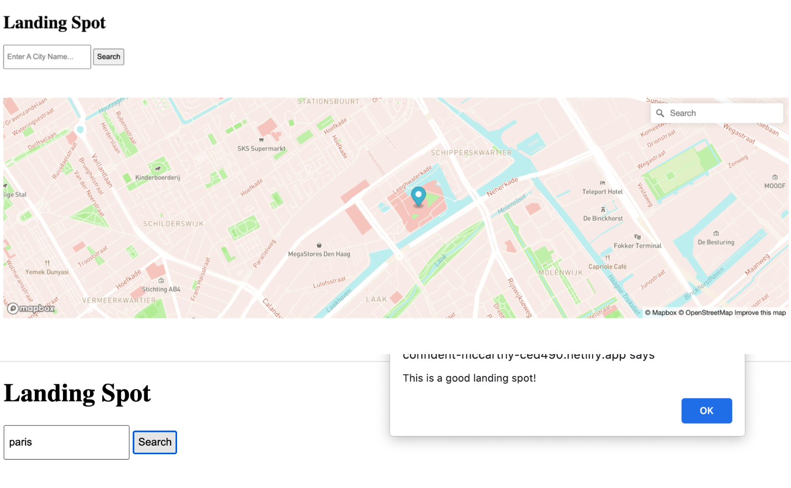

Challenge #1 The In-flight Interface - Creative Process
For this challenge the requirement is to create simple pop-up messages on websites, as well as how to declare variables to store values, and perform simple calculations such as add, subtract, multiply and divide,. We have learnt the properties of strings and their methods. We learnt how to display a sentence that contains both variables and system dialogues. We learnt to use Booleans, as well as how to round up numbers. Lastly, we learnt to use function () to store data, set parameters and return values.
In addition, arrays, functions, objects, Dom methods and its properties are applied to this challenge. Throughout the process, I have created a dice that generates random integers using the Math.floor method as well as how to return the values and print it into the console along with non-numerical string dialogues. I have applied what I learnt from lectures, such as how to input data such as numbers, strings, booleans into arrays and objects. I also stored a set of data of gravity in an object and printed the drawn data and display functions in the console.
Design Concept
For this challenge I came up with a retro website that contains a welcome message for the spaceship’s passengers, as well as 3 functionalities. The first one is Checking Food Supply , the second is measuring the Total Distance Traveled, and the last one allows users to View Gravity on both Earth and Mars. Elon Musk’s personal signature was added to the welcoming message to add a touch of personality and enhance the service’s trustworthiness. The interface is also designed with a retro-modern style, which pays tribute to the 60s success and development in the area of space travel. The starry background blurs away the boundary of an interface and reminds passengers of their connectedness with the vast existence of the universe surrounding them throughout their journey.

Challenge #2 Earth & Mars Clock - Creative Process
In this challenge a clock is made by using the new date() function. Prior to applying this onto the website, we learnt to calculate the differences between dates through an example of calculating how many days we have been studying since the beginning of the semester, as well as birthdays between king and queen.
We learnt to calculate and convert milliseconds back into hours, days, the kind of format that we want. We also learnt the getSeconds(), getMinutes() and getHours() and setInterval() method to build a digital clock that display the current time.
In addition, in this challenge I applied knowledge on creating animation in css and using @keyframes to control the duration and transition of the animation, especially the subtle transition of colors from red to blue, indicating the duality of both planet Earth and Mars.
I also named and controlled the transform, distort, rotate, flip, pause and resume the play state of the animation. Such an application was inspired by an in class presentation making the image travel from the left to the right side in a diagonal way and even flipping horizontally once the image slides into the edge. I also applied @keyframes to control the speed and duration when the clock switches.
We learnt to calculate and convert milliseconds back into hours, days, the kind of format that we want. We also learnt the getSeconds(), getMinutes() and getHours() and setInterval() method to build a digital clock that display the current time.
In addition, in this challenge I applied knowledge on creating animation in css and using @keyframes to control the duration and transition of the animation, especially the subtle transition of colors from red to blue, indicating the duality of both planet Earth and Mars.
I also named and controlled the transform, distort, rotate, flip, pause and resume the play state of the animation. Such an application was inspired by an in class presentation making the image travel from the left to the right side in a diagonal way and even flipping horizontally once the image slides into the edge. I also applied @keyframes to control the speed and duration when the clock switches.
Design Concept
The design decision was made with a clean, efficient one-button interface that is easy to understand, with a mass appeal to a wide range of populations inside the spaceship.
The choice of the background images are a diagonal earth image that accentuates on the thick atmospheric layer of mother earth and her signature color blue, a vital element that nurtures and protects the survival of human beings and other organisms on earth. A symbol of biodiversity.
On the contrary, the Mars image displays a sense of aridity, the matters are gathered and consolidated mostly on the right side of the image, signifying a drastic contrast that intrigues the audience in comparison to the abundance and liveliness of Earth. The light coming from the left side psychologically represents the future, indicating a sense of motivation and uplifting spirit to unlock the possibility of building a bright future on Mars.
This positive message is encrypted with the intent of influencing colonists on Mars and their mental well-being on a subconscious level in spite of isolation and anxiety about any upcoming difficulties.
In the middle of the design, the ever transitioning colors between blue and earthly red indicates the connectedness between the two planets, creating a sense of unity and harmony. In terms of functionality, it is also easily learnable and intuitive for user to reach for the button on various interfaces.
The choice of the background images are a diagonal earth image that accentuates on the thick atmospheric layer of mother earth and her signature color blue, a vital element that nurtures and protects the survival of human beings and other organisms on earth. A symbol of biodiversity.
On the contrary, the Mars image displays a sense of aridity, the matters are gathered and consolidated mostly on the right side of the image, signifying a drastic contrast that intrigues the audience in comparison to the abundance and liveliness of Earth. The light coming from the left side psychologically represents the future, indicating a sense of motivation and uplifting spirit to unlock the possibility of building a bright future on Mars.
This positive message is encrypted with the intent of influencing colonists on Mars and their mental well-being on a subconscious level in spite of isolation and anxiety about any upcoming difficulties.
In the middle of the design, the ever transitioning colors between blue and earthly red indicates the connectedness between the two planets, creating a sense of unity and harmony. In terms of functionality, it is also easily learnable and intuitive for user to reach for the button on various interfaces.

Challenge #3 Spaceship Landing System - Creative Process
In this challenge, I created an interactive interface that connects two API connections that supports the landing of SpaceX back onto Earth for 32 ex-colonist on Mars.
What I tried to achieve was to create an interface that allows users to determine whether the city is ideal for landing. When users input a city’s name, the system should be able to inform users whether it is a good landing spot, based on the weather condition of the city(if it was clear sky).
Users should also be able to browse the landing city’s center location on the map. The system combined two APIs from Mapbox and Open Weather.
When users found a landing spot with a clear sky and good weather, the pop up message will indicate success, informing users that it is a suitable spot for landing.
What I tried to achieve was to create an interface that allows users to determine whether the city is ideal for landing. When users input a city’s name, the system should be able to inform users whether it is a good landing spot, based on the weather condition of the city(if it was clear sky).
Users should also be able to browse the landing city’s center location on the map. The system combined two APIs from Mapbox and Open Weather.
When users found a landing spot with a clear sky and good weather, the pop up message will indicate success, informing users that it is a suitable spot for landing.
Design Concept
The main requirement of this challenge is the use of API, which is Application Programming interface. With API we are able to retrieve specific data we want from a database that other organizations share with us through a set of commands.
In this case I used Openweather. I call the API by adding an access token or API key and other information such as city name to it, we then learn to initiate the map and determine its properties such as the zoom in/out level and its starting location with coordinates.
I applied Mapbox studio to customize the outlook of the map in detail, such as its style and colors. Lastly, I added a marker to the map. The style of the map is a light, bright and earthy color that creates a sense of serenity, joy and peace that is welcoming for Mars Colonists who look forward to returning to their homeland.
In this case I used Openweather. I call the API by adding an access token or API key and other information such as city name to it, we then learn to initiate the map and determine its properties such as the zoom in/out level and its starting location with coordinates.
I applied Mapbox studio to customize the outlook of the map in detail, such as its style and colors. Lastly, I added a marker to the map. The style of the map is a light, bright and earthy color that creates a sense of serenity, joy and peace that is welcoming for Mars Colonists who look forward to returning to their homeland.